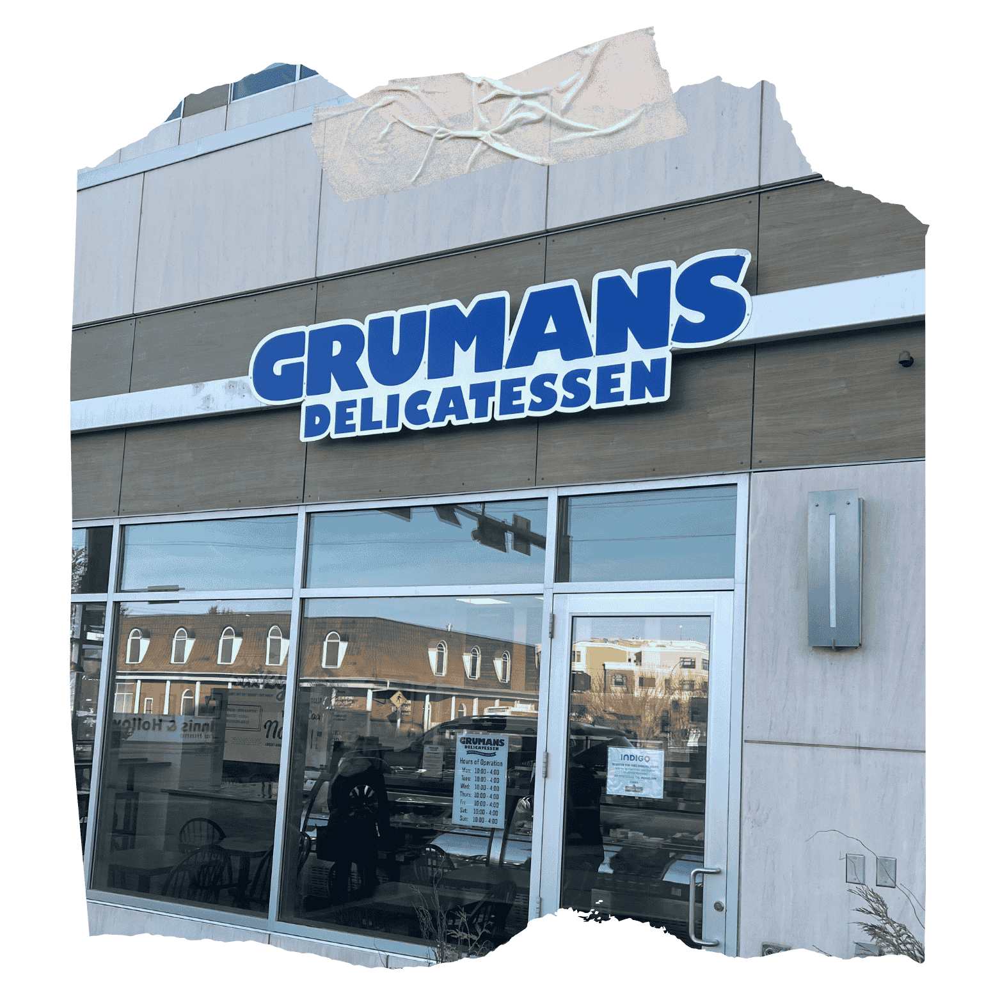
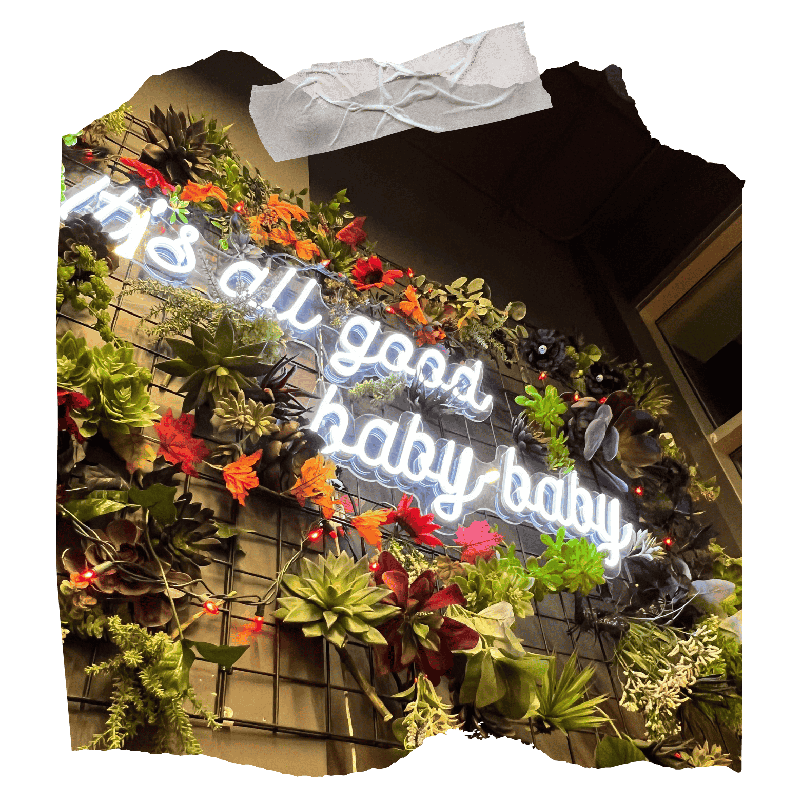
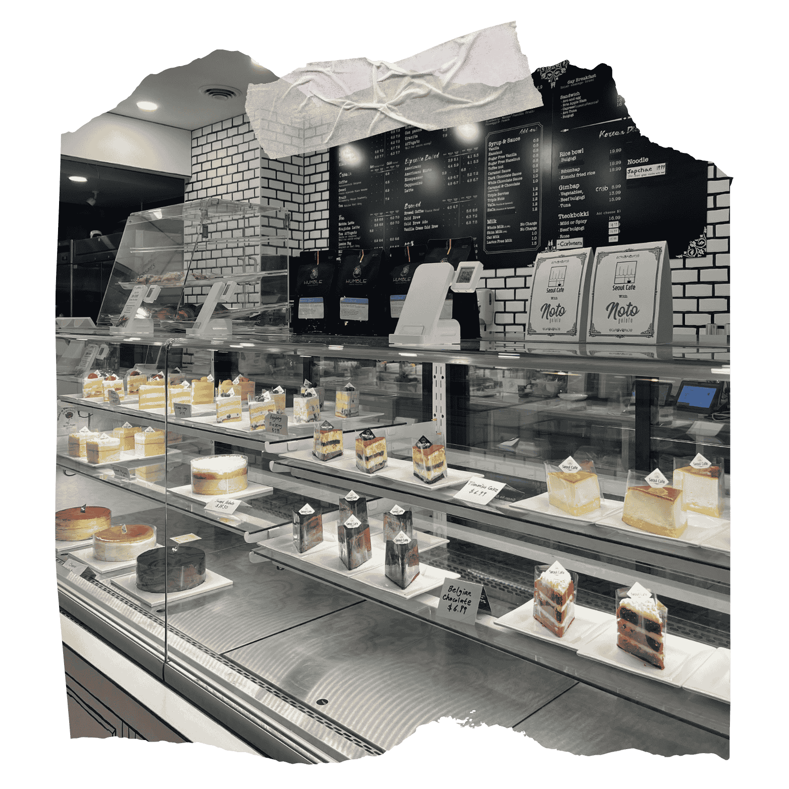

Grumans Delicatessen
5103 Elbow Dr SW, Calgary, AB T2V 1H2
Grumans Delicatessen is a lovely place that blends tradition and comfort in every bite. The cozy storefront and friendly vibe make it a spot where people from the neighborhood come together for good food and great chats. The aroma of warm bread and savory deli delights wafts through the air, offering a comforting taste of home with each meal. If you're in the mood for a classic sandwich or a dish that brings back memories, Grumans has you covered with genuine flavors and attention to detail. Coming here is more than just enjoying the food; it's about sharing great moments and savoring classic tastes.
Element Cafe
331 17 Ave SW, Calgary, AB T2S 0A5
Element Cafe is a warm little spot where the smell of fresh coffee surrounds you, making it a perfect place to relax. The vibrant plants and cozy lighting make for a perfect getaway from the chaos outside. The bright glow of meaningful words creates a special atmosphere, making it an ideal place for deep conversations or moments of quiet thought. Every sip of coffee here feels comforting, made to relax and uplift the spirit. If you're looking for some inspiration or just a quiet place to relax, Element Cafe is the place to go.
Seoul Cafe
273 10 St NW, Calgary, AB T2N 5B6
Seoul Cafe, located in Kensington, offers a lovely blend of contemporary style and Korean heritage. The sight of beautiful pastries and delicious coffee makes it hard for anyone to resist treating themselves to something sweet. The cozy atmosphere and thoughtfully selected menu make each bite and drink feel like a comforting hug from Seoul. This cafe has everything you need, from a fluffy cake to a great latte, making sure you remember your visit long after you leave. Seoul Cafe is a fantastic spot that perfectly combines comfort and indulgence with its delicious offerings.
Diane Schultze
GITHUB
Hey there! I’m Diane, a Web Design and Development student passionate about crafting engaging digital experiences with a mix of creativity and code.